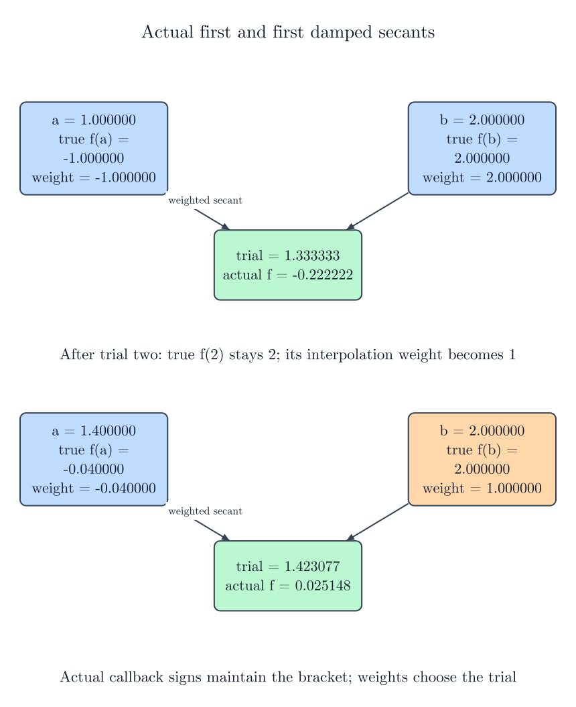
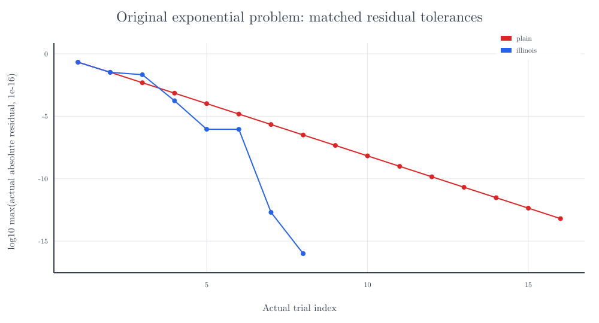
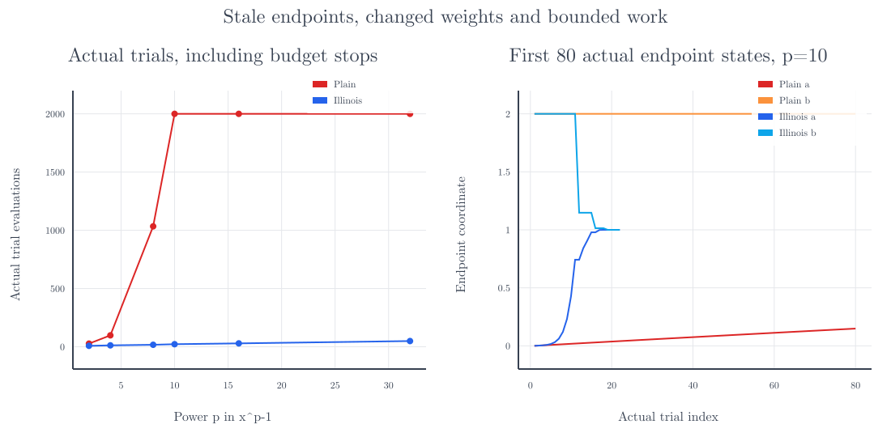
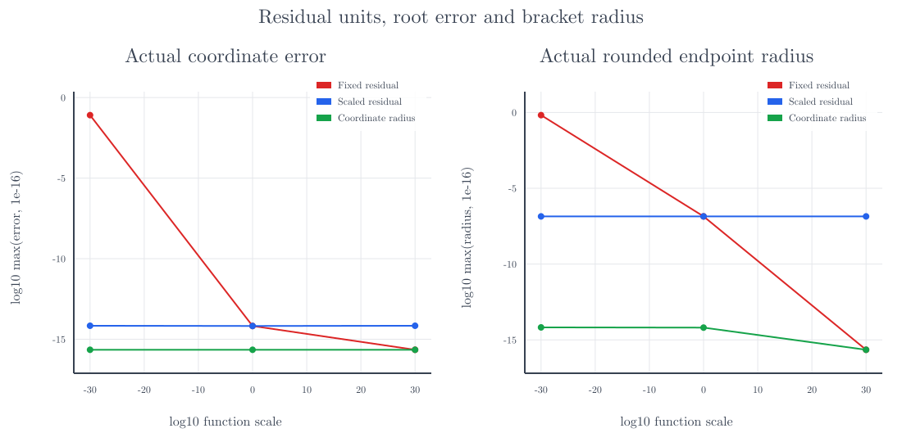
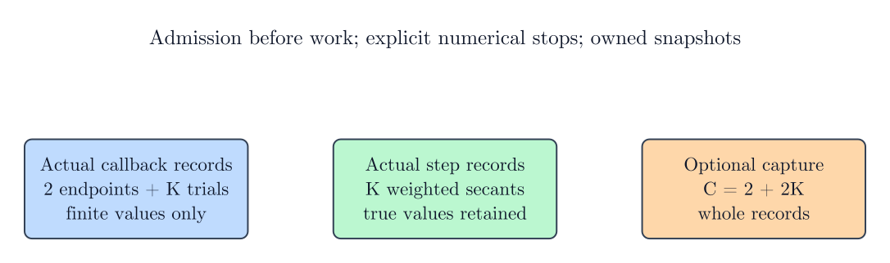

False Position and Illinois: True Brackets, Weighted Secants
Abstract
Locate a zero of a continuous scalar function from a sign-changing bracket. False position replaces the midpoint with a secant intercept; Illinois changes interpolation weights when an endpoint remains stale. Starting with x²−2 on [1,2], actual native records distinguish true endpoint values from those artificial weights. We retain the original exponential example, compare both methods at the same tolerance, and examine stalls, rescaled functions and full-width finite inputs. One checked C++ kernel serves ordinary results, work summaries and owned same-pass callback/step traces. Numerical stopping conditions are stated separately from mathematical root guarantees.
Three hand-checkable trials and the first weight change
For f(x)=x²−2, the endpoints one and two have values −1 and two. Their secant crosses zero at c=4/3, with actual callback value −2/9. This replaces the negative endpoint. The next trial is 1.4 with value −0.04, replacing that endpoint again. The native retained-twice Illinois rule then halves the other endpoint's interpolation weight from two to one. Its actual callback value remains f(2)=2.
The third secant uses a=1.4, weight −0.04 and b=2, weight one, producing c≈1.4230769. The actual f(c) is positive, so the true bracket can change sides. Artificial weights choose the secant; actual callback signs decide which bracket endpoint to replace. The three-trial budget below deliberately stops before convergence. All displayed values and branch flags are taken from the native solve, without a second explanatory iteration loop.
#include <dm/dm.hpp>
int main(){
std::filesystem::create_directories("build");
dm::algorithms::FalsePositionOptions options;options.residual_tolerance=0;options.max_iterations=3;const auto t=dm::algorithms::false_position_trace([](double x){return x*x-2;},1,2,options);
std::print("| trial | a | b | true f(b) | weight for b | estimate | actual f(estimate) | halved after trial |\n| ---: | ---: | ---: | ---: | ---: | ---: | ---: | :--- |\n");for(std::size_t i=0;i<t.steps.size();++i){const auto& p=t.steps[i];std::print("| {} | {:.9f} | {:.9f} | {:.9f} | {:.9f} | {:.9f} | {:.9f} | {} |\n",i+1,p.a,p.b,p.f_b,p.weight_b,p.estimate,p.f_estimate,p.damped);}
std::print("\nTiny run: trials {}; callback calls {}; record capture {}; halvings {}; stop {}.\n",t.outcome.result.iterations,t.outcome.evaluations,t.captured_entries,t.outcome.weight_halvings,dm::algorithms::false_position_stop_name(t.outcome.stop));
dm::graphics::Diagram g(58,1100);dm::graphics::DiagramNodeStyle box;box.width=3.8;box.height=1.8;box.font_size=22;
for(int panel=0;panel<2;++panel){const auto& p=t.steps[panel?2:0];const double y=panel?-8:0;box.fill={191,219,254};g.node(std::format("a{}",panel),{0,y},std::format("a = {:.6f}\ntrue f(a) = {:.6f}\nweight = {:.6f}",p.a,p.f_a,p.weight_a),box);box.fill=panel?dm::graphics::RGB{254,215,170}:dm::graphics::RGB{191,219,254};g.node(std::format("b{}",panel),{10,y},std::format("b = {:.6f}\ntrue f(b) = {:.6f}\nweight = {:.6f}",p.b,p.f_b,p.weight_b),box);box.fill={187,247,208};g.node(std::format("c{}",panel),{5,y-3},std::format("trial = {:.6f}\nactual f = {:.6f}",p.estimate,p.f_estimate),box).edge(std::format("a{}",panel),std::format("c{}",panel),"weighted secant").edge(std::format("b{}",panel),std::format("c{}",panel));}
g.text({5,3},"Actual first and first damped secants",27).text({5,-5.3},"After trial two: true f(2) stays 2; its interpolation weight becomes 1",23).text({5,-13.6},"Actual callback signs maintain the bracket; weights choose the trial",23).save_svg("build/false_position_tiny.svg");if(t.steps.size()!=3||!t.steps[1].damped||t.steps[2].f_b!=2||t.steps[2].weight_b!=1)throw std::runtime_error("tiny weight evidence failed");
}| trial | a | b | true f(b) | weight for b | estimate | actual f(estimate) | halved after trial |
|---|---|---|---|---|---|---|---|
| 1 | 1.000000000 | 2.000000000 | 2.000000000 | 2.000000000 | 1.333333333 | -0.222222222 | false |
| 2 | 1.333333333 | 2.000000000 | 2.000000000 | 2.000000000 | 1.400000000 | -0.040000000 | true |
| 3 | 1.400000000 | 2.000000000 | 2.000000000 | 1.000000000 | 1.423076923 | 0.025147929 | false |
Tiny run: trials 3; callback calls 5; record capture 8; halvings 1; stop iteration limit.

Derive the weighted trial and preserve the true sign bracket
Let w_a and w_b be nonzero, oppositely signed interpolation weights. The line (1−t)w_a+t w_b crosses zero at
In exact arithmetic 0<t<1, so the trial lies inside the endpoint interval, regardless of their supplied order. Evaluate the actual f(c). If it is nonzero, replace the endpoint whose true value has the same sign as f(c). The remaining true values still have opposite signs. Under continuity and reliable signs, the intermediate value theorem therefore keeps a root inside the bracket. Never substitute a halved weight for a callback value when checking this invariant or reporting a residual.
Plain regula falsi keeps both weights equal to the actual endpoint values. For the native Illinois variant, two consecutive replacements of the same endpoint trigger a halving of the opposite retained weight. No previous replacement is assumed initially. This preserves the existing compiled API. Dowell and Jarratt's most-recent-point initialization can damp after its first trial; our starting rule differs, so its literal early iterates need not reproduce their table. The stale-weight mechanism is the same.
Each ordinary iteration adds one callback evaluation after two initial endpoint evaluations. Ordinary calls use constant auxiliary storage. Traces retain those actual calls and pre-update steps in the same pass, with no callback or input reference retained. Callback exceptions propagate, and side effects may already have occurred when a later failure is raised.
Retain the original exponential example and compare equal tolerances
The original call solves exp(x)−2 on [0,1] with the default residual tolerance 1e−10. It still returns after seven trials. The old report's local comparison used 1e−13 instead, so its eight Illinois trials were a different stopping request. Both histories now come from the core, with matched controls: plain and Illinois use the same 1e−13 tolerance and forty-trial budget.
The plot floors absolute residuals at 1e−16 solely before taking log10 for display. Actual final residuals and stop reasons remain printed without that floor. A callback value of zero is a floating result, not a mathematical certificate of an exactly represented logarithm.
#include <dm/dm.hpp>
int main(){
std::filesystem::create_directories("build");
auto f=[](double x){return std::exp(x)-2;};const auto legacy=dm::algorithms::false_position(f,0,1);std::print("Original default: root {:.12f}; ln(2) {:.12f}; trials {}; actual residual {:.9g}.\n",legacy.root,std::log(2.),legacy.iterations,legacy.residual);auto plot=dm::graphics::RPlot::create();
std::print("\n| policy | residual tolerance | trials | callback calls | captured records | actual final residual | stop |\n| :--- | ---: | ---: | ---: | ---: | ---: | :--- |\n");for(auto policy:{dm::algorithms::FalsePositionPolicy::Plain,dm::algorithms::FalsePositionPolicy::Illinois}){dm::algorithms::FalsePositionOptions o{policy,1e-13,0,40};const auto t=dm::algorithms::false_position_trace(f,0,1,o);std::vector<double>x,y;for(std::size_t i=0;i<t.steps.size();++i){x.push_back(i+1);y.push_back(std::log10(std::max(std::abs(t.steps[i].f_estimate),1e-16)));}const auto name=std::string(dm::algorithms::false_position_policy_name(policy));const auto colour=policy==dm::algorithms::FalsePositionPolicy::Plain?dm::graphics::RGB{220,38,38}:dm::graphics::RGB{37,99,235};plot.line(x,y,name,colour,2).points(x,y,"",colour,4);std::print("| {} | 1e-13 | {} | {} | {} | {:.9g} | {} |\n",name,t.outcome.result.iterations,t.outcome.evaluations,t.captured_entries,t.outcome.result.residual,dm::algorithms::false_position_stop_name(t.outcome.stop));if(!t.outcome.result.converged)throw std::runtime_error("original matched run failed");}
plot.title("Original exponential problem: matched residual tolerances").x_label("Actual trial index").y_label("log10 max(actual absolute residual, 1e-16)").size(1000,540).save_svg("build/false_position_original.svg");if(legacy.iterations!=7)throw std::runtime_error("original default changed");
}Original default: root 0.693147180560; ln(2) 0.693147180560; trials 7; actual residual 2.01616501e-13.
| policy | residual tolerance | trials | callback calls | captured records | actual final residual | stop |
|---|---|---|---|---|---|---|
| plain | 1e-13 | 16 | 18 | 34 | 6.32827124e-14 | residual |
| illinois | 1e-13 | 8 | 10 | 18 | 0 | zero callback |

A more pronounced stall and a finite trial budget
For xp−1 on [0,2], a convex curve can keep the right endpoint fixed while plain false position advances from the left. As p grows, the initial positive value 2p−1 becomes much larger than the negative value −1, placing trials near the left endpoint. Illinois changes the retained positive weight after repeated left replacements, allowing a different trial location.
The next program measures powers two through thirty-two with identical residual tolerances and 2,000-trial budgets. Exhaustion is reported as such; a finite-prefix plot cannot prove eventual convergence or its asymptotic rate. The right panel displays the first eighty actual pre-update endpoint states for p=10, so it shows bracket movement separately from callback residual reduction. A residual stop may still leave a wide bracket.
Under smooth simple-root assumptions, the Illinois paper analyzes a repeating three-evaluation pattern with cubic error improvement and an efficiency index near the cube root of three. That is neither a universal per-trial rate nor an unconditional guarantee for finite arithmetic, discontinuities or multiple roots. We do not estimate a convergence order from these few plotted points.
#include <dm/dm.hpp>
int main(){
std::filesystem::create_directories("build");
std::print("| power p | policy | trials | callback calls | halvings | actual residual | stop |\n| ---: | :--- | ---: | ---: | ---: | ---: | :--- |\n");auto counts=dm::graphics::RPlot::create(),endpoints=dm::graphics::RPlot::create();std::vector<double> powers,plain,illinois;
for(int power:{2,4,8,10,16,32}){powers.push_back(power);for(auto policy:{dm::algorithms::FalsePositionPolicy::Plain,dm::algorithms::FalsePositionPolicy::Illinois}){dm::algorithms::FalsePositionOptions o{policy,1e-12,0,2000};auto f=[=](double x){return std::pow(x,power)-1;};const auto t=dm::algorithms::false_position_trace(f,0,2,o);std::print("| {} | {} | {} | {} | {} | {:.8g} | {} |\n",power,dm::algorithms::false_position_policy_name(policy),t.outcome.result.iterations,t.outcome.evaluations,t.outcome.weight_halvings,t.outcome.result.residual,dm::algorithms::false_position_stop_name(t.outcome.stop));(policy==dm::algorithms::FalsePositionPolicy::Plain?plain:illinois).push_back(t.outcome.result.iterations);
if(power==10){std::vector<double>x,a,b;for(std::size_t j=0;j<std::min<std::size_t>(80,t.steps.size());++j){x.push_back(j+1);a.push_back(t.steps[j].a);b.push_back(t.steps[j].b);}const bool is_plain=policy==dm::algorithms::FalsePositionPolicy::Plain;const auto colour=is_plain?dm::graphics::RGB{220,38,38}:dm::graphics::RGB{37,99,235};endpoints.line(x,a,is_plain?"Plain a":"Illinois a",colour,2).line(x,b,is_plain?"Plain b":"Illinois b",is_plain?dm::graphics::RGB{251,146,60}:dm::graphics::RGB{14,165,233},2);}
}}
counts.line(powers,plain,"Plain",{220,38,38},2).points(powers,plain,"",{220,38,38},4).line(powers,illinois,"Illinois",{37,99,235},2).points(powers,illinois,"",{37,99,235},4).title("Actual trials, including budget stops").x_label("Power p in x^p-1").y_label("Actual trial evaluations");endpoints.title("First 80 actual endpoint states, p=10").x_label("Actual trial index").y_label("Endpoint coordinate");dm::graphics::RLayout::create(1,2).add(counts).add(endpoints).size(1100,540).title("Stale endpoints, changed weights and bounded work").fit_panels().save_svg("build/false_position_stall.svg");
}| power p | policy | trials | callback calls | halvings | actual residual | stop |
|---|---|---|---|---|---|---|
| 2 | plain | 27 | 29 | 0 | 5.246914e-13 | residual |
| 2 | illinois | 8 | 10 | 2 | 8.1712415e-14 | residual |
| 4 | plain | 98 | 100 | 0 | 9.2281738e-13 | residual |
| 4 | illinois | 12 | 14 | 5 | 3.375078e-14 | residual |
| 8 | plain | 1034 | 1036 | 0 | 9.8054898e-13 | residual |
| 8 | illinois | 17 | 19 | 9 | 0 | zero callback |
| 10 | plain | 2000 | 2002 | 0 | 2.3656218e-06 | iteration limit |
| 10 | illinois | 22 | 24 | 13 | 0 | zero callback |
| 16 | plain | 2000 | 2002 | 0 | 1 | iteration limit |
| 16 | illinois | 29 | 31 | 20 | 2.3092639e-14 | residual |
| 32 | plain | 2000 | 2002 | 0 | 1 | iteration limit |
| 32 | illinois | 49 | 51 | 40 | 3.5527137e-14 | residual |

Function units and coordinate tolerances are different controls
Multiplying f by a positive scale does not change its mathematical roots or an exact-arithmetic unweighted secant. It does change a residual measured in function units. Keeping a fixed 1e−10 residual tolerance for 10^−30(x²−2) accepts the first trial despite a substantial coordinate error. Scaling that tolerance by the same factor restores a comparable request; finite rounding can still alter an individual path.
The program also disables residual tolerance and requests a rounded maximum trial-to-endpoint distance below 1e−10 in coordinate units. Under continuity and reliable signs, a true root in that bracket has distance no greater than its exact endpoint radius. The API's radius is rounded, not an independently outward-rounded interval certificate. A positive coordinate tolerance does not prove the existence of a root for a discontinuous function. Zero disables either tolerance separately; callback zeros always stop.
The log plots use a 1e−16 display floor for zero or smaller measured errors and radii. Printed values retain their actual values. A large-scale residual may never become small enough before the interpolation rounds to an endpoint; stagnation is reported explicitly instead of called convergence.
#include <dm/dm.hpp>
int main(){
std::filesystem::create_directories("build");
auto error=dm::graphics::RPlot::create(),radius=dm::graphics::RPlot::create();std::vector<double>x;std::vector<std::vector<double>>errors(3),radii(3);const double truth=std::sqrt(2.);
std::print("| scale exponent | request | root | absolute coordinate error | actual residual | rounded radius | trials | stop |\n| ---: | :--- | ---: | ---: | ---: | ---: | ---: | :--- |\n");for(int exponent:{-30,0,30}){const double scale=std::pow(10.,exponent);x.push_back(exponent);for(int mode=0;mode<3;++mode){dm::algorithms::FalsePositionOptions o;if(mode==1)o.residual_tolerance=scale*1e-10;if(mode==2){o.residual_tolerance=0;o.x_tolerance=1e-10;}const auto r=dm::algorithms::false_position_work([=](double z){return scale*(z*z-2);},1,2,o);const double e=std::abs(r.result.root-truth);const std::string name=mode==0?"fixed residual":mode==1?"scaled residual":"coordinate radius";std::print("| {} | {} | {:.12f} | {:.8g} | {:.8g} | {:.8g} | {} | {} |\n",exponent,name,r.result.root,e,r.result.residual,r.radius,r.result.iterations,dm::algorithms::false_position_stop_name(r.stop));errors[mode].push_back(std::log10(std::max(e,1e-16)));radii[mode].push_back(std::log10(std::max(r.radius,1e-16)));if(exponent==-30&&mode==0&&e<.01)throw std::runtime_error("small-residual control failed");}}
const std::vector<std::string>names{"Fixed residual","Scaled residual","Coordinate radius"};const std::vector<dm::graphics::RGB>colours{{220,38,38},{37,99,235},{22,163,74}};for(int mode=0;mode<3;++mode){error.line(x,errors[mode],names[mode],colours[mode],2).points(x,errors[mode],"",colours[mode],4);radius.line(x,radii[mode],names[mode],colours[mode],2).points(x,radii[mode],"",colours[mode],4);}error.title("Actual coordinate error").x_label("log10 function scale").y_label("log10 max(error, 1e-16)");radius.title("Actual rounded endpoint radius").x_label("log10 function scale").y_label("log10 max(radius, 1e-16)");dm::graphics::RLayout::create(1,2).add(error).add(radius).size(1100,540).title("Residual units, root error and bracket radius").fit_panels().save_svg("build/false_position_units.svg");
}| scale exponent | request | root | absolute coordinate error | actual residual | rounded radius | trials | stop |
|---|---|---|---|---|---|---|---|
| -30 | fixed residual | 1.333333333333 | 0.080880229 | 2.2222222e-31 | 0.66666667 | 1 | residual |
| -30 | scaled residual | 1.414213562373 | 6.8833828e-15 | 1.9095836e-44 | 1.3940556e-07 | 7 | residual |
| -30 | coordinate radius | 1.414213562373 | 2.220446e-16 | 4.4408921e-46 | 6.6613381e-15 | 9 | interval |
| 0 | fixed residual | 1.414213562373 | 6.6613381e-15 | 1.8651747e-14 | 1.3940556e-07 | 7 | residual |
| 0 | scaled residual | 1.414213562373 | 6.6613381e-15 | 1.8651747e-14 | 1.3940556e-07 | 7 | residual |
| 0 | coordinate radius | 1.414213562373 | 2.220446e-16 | 4.4408921e-16 | 6.4392935e-15 | 9 | interval |
| 30 | fixed residual | 1.414213562373 | 2.220446e-16 | 4.4408921e+14 | 2.220446e-16 | 10 | stagnation |
| 30 | scaled residual | 1.414213562373 | 6.8833828e-15 | 1.9095836e+16 | 1.3940556e-07 | 7 | residual |
| 30 | coordinate radius | 1.414213562373 | 2.220446e-16 | 4.4408921e+14 | 2.220446e-16 | 10 | interval |

Finite arithmetic, explicit failures and owned capture
The product form of the secant can overflow even for finite endpoints and finite callback values. The shared kernel retains that expression when checks prove its products, differences and division finite. Otherwise it forms a positive weight ratio after scaling and uses std::lerp, avoiding the overflowing products or sum. Nonzero secant products that become subnormal or zero also select that fallback, preventing a spurious endpoint trial from product underflow. Ordinary underflow flags can still occur while detecting those products or halving a weight. The ratio or final point can still round to an endpoint; that produces a stagnation stop unless an earlier stopping test passes. The huge-coordinate example below has ordinary floating interpolation error, so its small measured residual is printed rather than called exact.
Actual endpoint values remain distinct from artificial weights. If an actual Illinois halving underflows a nonzero weight to zero, execution stops explicitly without interpreting that artificial zero as a callback root. A finite jump between adjacent doubles illustrates a separate issue: coordinate tolerance can pass without a zero of a discontinuous mathematical function.
Input callbacks, finite endpoints, supported policies, finite nonnegative new-option tolerances and a positive trial budget are validated before work. The legacy tolerance remains strictly positive. Nonfinite callback returns raise a domain error; callback exceptions propagate. Both endpoint calls are retained in input order, even when the first value is zero.
Optional capture counts whole records: C=E+K=2+2K for K actual trials, including two endpoint evaluation records and one evaluation plus one step per trial. The default quota is one million; zero disables only that quota. The initial two records are admitted before either callback, and each next pair before interpolation or its callback. Output, metadata, capacities, allocator bytes and runtime temporaries are excluded, so C is not peak RAM. Ordinary calls keep no optional history or quota. Exceptions return no partial trace, and returned record copies own their values.
#include <dm/dm.hpp>
int main(){
std::filesystem::create_directories("build");
volatile double maximum=std::numeric_limits<double>::max();const double M=maximum;std::print("| finite stress case | root | actual residual | trials | guarded trials | overflow or invalid flag |\n| :--- | ---: | ---: | ---: | ---: | :--- |\n");for(int which=0;which<2;++which){auto f=[=](double x){return which?(M*.75)*(x-.25):x/M-.25;};std::feclearexcept(FE_ALL_EXCEPT);const auto r=dm::algorithms::false_position_work(f,which?-1:-M,which?1:M);const bool bad=std::fetestexcept(FE_OVERFLOW|FE_INVALID);std::print("| {} | {:.9g} | {:.9g} | {} | {} | {} |\n",which?"huge callback values":"huge coordinates",r.result.root,r.result.residual,r.result.iterations,r.guarded_interpolations,bad);if(!r.result.converged||bad||r.guarded_interpolations!=1)throw std::runtime_error("finite guard failed");}
dm::algorithms::FalsePositionOptions tiny_options;tiny_options.residual_tolerance=0;const double tiny=std::ldexp(1.,-1020);const auto tiny_result=dm::algorithms::false_position_work([=](double x){return (x/tiny-.25)*tiny;},-tiny,tiny,tiny_options);std::print("\nTiny affine: root/scale {}; trials {}; guarded trials {}; stop {}.\n",tiny_result.result.root/tiny,tiny_result.result.iterations,tiny_result.guarded_interpolations,dm::algorithms::false_position_stop_name(tiny_result.stop));if(!tiny_result.result.converged||tiny_result.result.root/tiny!=.25||tiny_result.guarded_interpolations==0)throw std::runtime_error("tiny-product interpolation failed");
dm::algorithms::FalsePositionOptions o;o.residual_tolerance=0;const double a=1,b=std::nextafter(a,2.);auto jump=[=](double x){return x==a?-1.:1.;};const auto stagnated=dm::algorithms::false_position_work(jump,a,b,o);o.x_tolerance=1e-10;const auto interval=dm::algorithms::false_position_work(jump,a,b,o);o.x_tolerance=0;o.max_iterations=10;const double small=std::numeric_limits<double>::denorm_min();const auto underflow=dm::algorithms::false_position_trace([=](double x){return x==-M?-small:small;},-M,M,o);
std::size_t calls=0;auto linear=[&](double x){++calls;return x-1;};int rejected=0;try{(void)dm::algorithms::false_position_trace(linear,0,2,{},1);}catch(const std::length_error&){++rejected;}const auto initial_calls=calls;try{(void)dm::algorithms::false_position_trace(linear,0,2,{},3);}catch(const std::length_error&){++rejected;}const auto endpoint_calls=calls;auto exact=dm::algorithms::false_position_trace(linear,0,2,{},4);const auto owned=exact;exact.steps.front().estimate=99;const auto disabled=dm::algorithms::false_position_trace(linear,0,2,{},0);
std::print("\nAdjacent finite jump: no-tolerance stop {}; coordinate-tolerance stop {}; actual residuals {} and {}.\n",dm::algorithms::false_position_stop_name(stagnated.stop),dm::algorithms::false_position_stop_name(interval.stop),stagnated.result.residual,interval.result.residual);std::print("Actual weight underflow: trials {}; halvings {}; callbacks {}; capture {}; stop {}; converged {}.\n",underflow.outcome.result.iterations,underflow.outcome.weight_halvings,underflow.outcome.evaluations,underflow.captured_entries,dm::algorithms::false_position_stop_name(underflow.outcome.stop),underflow.outcome.result.converged);std::print("Quota controls: initial-short calls {}; trial-short cumulative calls {}; rejections {}/2; exact capture {}; disabled capture {}; owned estimate {}.\n",initial_calls,endpoint_calls,rejected,owned.captured_entries,disabled.captured_entries,owned.steps.front().estimate);
int invalid=0;try{(void)dm::algorithms::false_position({},0,2);}catch(const std::invalid_argument&){++invalid;}try{(void)dm::algorithms::false_position([](double x){return x-1;},0,2,0);}catch(const std::invalid_argument&){++invalid;}try{(void)dm::algorithms::false_position([](double){return std::numeric_limits<double>::infinity();},0,2);}catch(const std::domain_error&){++invalid;}std::print("Malformed/nonfinite rejections {}/3.\n",invalid);
dm::graphics::Diagram g(58,1100);dm::graphics::DiagramNodeStyle box;box.width=4.7;box.height=2.1;box.font_size=23;box.fill={191,219,254};g.node("calls",{0,0},"Actual callback records\n2 endpoints + K trials\nfinite values only",box);box.fill={187,247,208};g.node("steps",{6.5,0},"Actual step records\nK weighted secants\ntrue values retained",box);box.fill={254,215,170};g.node("capture",{13,0},"Optional capture\nC = 2 + 2K\nwhole records",box).text({6.5,3.2},"Admission before work; explicit numerical stops; owned snapshots",25).save_svg("build/false_position_limits.svg");if(rejected!=2||invalid!=3||initial_calls!=0||endpoint_calls!=2||owned.steps.front().estimate!=1||underflow.outcome.stop!=dm::algorithms::FalsePositionStop::WeightUnderflow)throw std::runtime_error("boundary controls failed");
}| finite stress case | root | actual residual | trials | guarded trials | overflow or invalid flag |
|---|---|---|---|---|---|
| huge coordinates | 4.49423284e+307 | 2.77555756e-17 | 1 | 1 | false |
| huge callback values | 0.25 | 0 | 1 | 1 | false |
Tiny affine: root/scale 0.25; trials 1; guarded trials 1; stop zero callback.
Adjacent finite jump: no-tolerance stop stagnation; coordinate-tolerance stop interval; actual residuals 1 and 1. Actual weight underflow: trials 2; halvings 1; callbacks 4; capture 6; stop weight underflow; converged false. Quota controls: initial-short calls 0; trial-short cumulative calls 2; rejections 2/2; exact capture 4; disabled capture 4; owned estimate 1. Malformed/nonfinite rejections 3/3.

References
- M. Dowell and P. Jarratt (1971), A modified regula falsi method for computing the root of an equation, BIT 11, 168–174. [Primary paper, university-hosted copy](https://personal.math.ubc.ca/~loew/mech2/Dowell+Jarratt.pdf). The native retained-twice initialization, stopping controls and finite-arithmetic guards are identified above; literal early iterates and stopping requests differ.